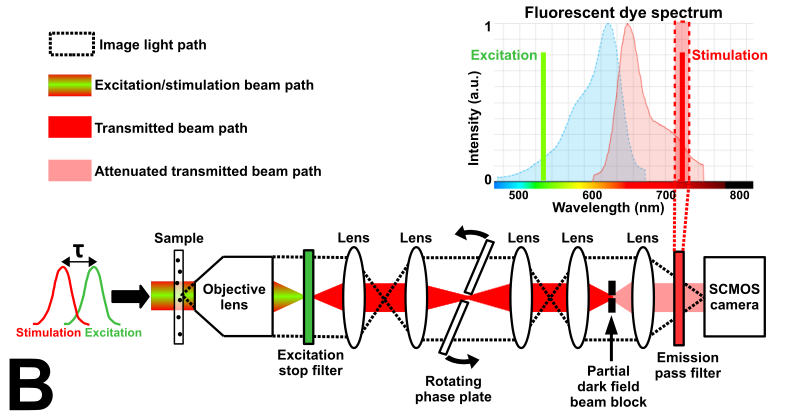
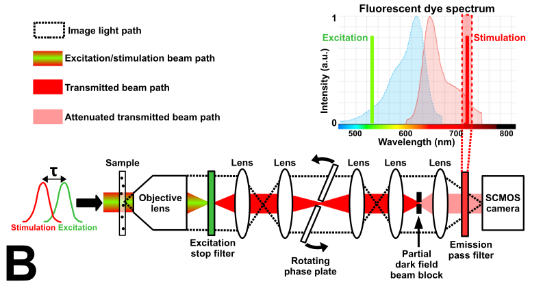

Stimulated Emission Imaging
This project is maintained by Sanjay R. Varma and was funded by Calico Labs
Appendix
Stimulated Emission Imaging
Fluorescent samples and mounting
Phase contrast microscope diagram
The experiment setup schematic in Figure 2B of the online version of the main article contains all schematics used. The print/pdf version only includes the dark-field imaging schematic. Figure S2 below is the phase contrast imaging schematic.
 

Parts list
Crimson dyed polystyrene bead fluorescence
The fluorescence saturation and depletion plot in Figure 3 of the online version of the main article contains data from nanodiamonds doped with nitrogen vacancy (N-v) centers and from crimson fluorescent dyed polystyrene beads. The print/pdf version only includes the N-v center data. Figure S4 below is the phase contrast imaging schematic.
/figure_generation/figure_3b.py.Axial view of fluorescence from a nanodiamond doped with N-v centers
The fluorescence plot in Figure 3 of the online version of the main article shows a transverse (xy) view of the fluorescence from a nanodiamond doped with N-v centers at focus. Figure S4 below shows an axial (xz) projection of a stack of fluorescence images taken with varying axial position of the nanodiamond relative to focus. The images used to generate the axial projection were taken in 200 nm axial steps.

/figure_generation/figure_S4.py. Controls for thermal effects due to the excitation laser
In order to confirm that the change we observe in the scattered 721 nm wavelength (red) light images are due to coherent interference with stimulated emission, we had to rule out other possible effects of the excitation (green) laser pulse on the red image (comprised of the transmitted stimulating beam, scattered light, and stimulated emission). Stimulated emission is a fast process; it may emit from a fluorophore as long as it is in the excited state, which normally persists just nanoseconds after the excitation energy is shut off. The excitation laser pulse could also possibly heat the emitters, which could change the size or refractive index of the emitter with respect to the surrounding media. This, in turn, would change the scattering properties of the emitter and alter the scattered light image. However, heating is a process that should persist long after the excitation laser is turned off.
In our experiments, we irradiated fluorescent samples with 1 µs duration excitation and stimulation laser pulses. Figure S5 shows a sample dark-field image of a N-v center-doped nanodiamond when irradiated solely by the stimulation laser pulses, along with the change in the image due to excitation laser pulses with variable delay relative to the stimulation pulses. When the excitation and stimulation pulses were simultaneous, we observed maximal decrease in brightness of the dark field scattered light image. When the stimulation pulse irradiated the sample just microseconds after the excitation pulse, we observed no change in brightness. From this, we conclude that the change in brightness occurs on a timescale faster than ~ 1 µs, as we would expect from stimulated emission.

In phase contrast imaging mode of the nanodiamonds, we increased the duration of the excitation laser pulse by a factor of 20 (25 microseconds) while maintaining the same peak excitation intensity. With this excitation pulse duration, we delayed the stimulation laser pulse and observed a change in scattered light signal made by the stimulation pulse that persisted after the end of the excitation pulse. This result can be seen in Figure S6. Unlike the signal we attribute to stimulated emission that appears in the data in the main article, this signal peaks 250 µs after the end of the excitation pulse and decays with a ~ 1 ms time constant. Additionally, the delayed signal contrast is maximized when the scattered light signal contrast is minimized, meaning that the phase difference between scattered light and the time-delayed change in scattered light is 90° ± 10°. This result reinforces our conclusion that the sub-microsecond timescale effect we described in the main article is not heating [why?].

/figure_generation/figure_S6.py.The change in scattered light signal depends on the duration of the excitation and stimulation laser pulses

/figure_generation/figure_S6.py.
| Phase plate angle #: | (Adjust the phase of the transmitted light relative to scattered light) |
/figure_generation/figure_S8.py.